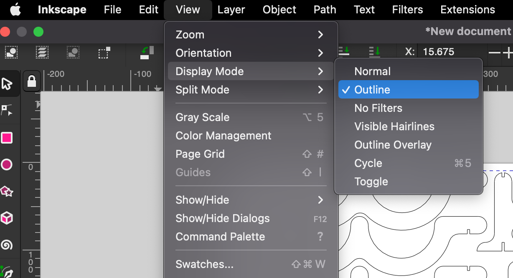

Project 2 - Laser and vinyl cutting
Sorry, this one is in Icelandic too...
Vínilskerinn
Verkefnið með vínilskerann var auðvelt í framkvæmd og tók enga stund. Fyrst var að finna mynd af því sem þú vilt gera límmiða af.
Næst notaði ég Trace Bitmap og valdi Brightness cutoff. Læsti hlutföllunum og hafði lengdina á myndinni 10 cm. Valdi Fill and stroke -> Stroke style og setti þar width: 0.020 mm sem er stærðin á hnífnum í skeranum. Næst var að Exporta sem svg og setja á USB lykil og setja í tölvuna sem tengd var við skerann. Því miður er ég ekki með myndir þar sem það var ekki mín tölva og ég fattaði ekki að taka skjáskot. En annars var það svo vistað sem .pdf og það sent til vínilskerans sem prentaði björninn. Ég plokkaði svo efnið af í kringum björninn og setti málningarlímband yfir björninn sjálfan. Það var gert til þess að flytja björninn af blaðinu yfir á tölvuna mína (sjá mynd). Þá var límmiðinn tilbúinn.

Laser skurður
1. Hönnun
Fyrst þarf að ákveða hvað skal hanna, ég ákvað að gera vínflöskustand sem að heldur 4 vínflöskum. Gott er að vera vel undirbúinn og sækja allan þann hugbúnað sem þarf til þess að vinna verkefnið.
- Fusion 360
- Inkscape
Ég byrjaði á því að sjá fyrir mér hversu marga hluti ég væri með og byrjaði á að teikna sjálfan bútinn sem heldur uppi vínflöskunni. Til þess þá þurfti ég að mæla þvermálið á einni af uppáhalds rauðvínsflöskunum mínum til þess að hún myndi passa rétt.
Teikna vínhaldarann
Til þess að allt passi saman þarf 4 svona búta en efri búturinn er ekki með rák fyrir hliðarnar efst.
Botn
 Hér er ég að húa til botn, passa þarf að rákirnar fyrir fæturna og haldinn séu jafn breiðir og efnið.
Hér er ég að húa til botn, passa þarf að rákirnar fyrir fæturna og haldinn séu jafn breiðir og efnið.
Hliðar
Hliðarnar eru einfaldar og eins báðu megin.
Fætur
Til þess að standurinn haldist uppréttur þarf auka stuðning og því eru gerður 4 svona fætur sem stiðja við hann.
Extrude-a Sketch-a
Extrudum sketchana um 3 mm þar sem við erum að nota 3 mm þykkt acryl efni.
Samsetning
Svo eru allir hlutar settir saman og lagðir flatt, það er gert með því að búa til nýtt skjal, opna recents vinstra megin og hægri smella á hlutinn sem þú vilt flytja inn og smella þar á "Insert into current design" og þar raðar maður þeim saman og notar align til þess að þeir séu allir í sömu hæð.
2. Kerf Próf
Áður en laser skurður er framkvæmdur þarf að stilla inn kerfið til þess að offsetta útlínur í Fusion. Þetta er gert til þess að fá sem besta samsettningu. Kerf próf er afar einfalt í framkvæmd og má lesa um hvernig það er gert á vefsíðunni hans Birkis þar sem að við framkvæmdum prófið saman. Kerfið í acryl efninu var 0.19 mm og því var unnið með það.
Stilla inn Kerf
Ein besta leiðinn til þess að stilla in Kerf í Fusion er að offsetta allt í einu. Það er gert með því að fara í "Manufacture" inn í Fusion. Búa til nýtt Setup. Velja operation "Cutting" og velja modelið. Þegar það er komið þá þarf að búa til 2D model. Þá þarf að velja tool og við búum til laser skera sem er með okkar kerfi. Sjá stillingar hér fyrir neðan. Í 2D profile þá þarf að fara í geometry og velja face contours og velja alla íhluti. Þegar það er komið þá býr Fusion til toolpath fyrir laser skurðinn út frá kerfinu. Þá þarf að exporta úr Fusion og það er gert með NC Program og má sjá stillingar fyrir það hér fyrir neðan.
Manufacture
Velja "Manufacture" í staðinn fyrir Design
Setup
Búa til nýtt Setup
2D Profile
Búa til 2D Profile fyrir modelið.
New Tool
Búa til nýtt Tool.
Skýra tólið
Setja inn Kerf
Hér þarf að setja inn Kerf eftir kerf prófinu. Stærðin á hausnum á laserskeranum skiptir ekki máli.
Geometry
Velja geometry flipan, velja þar Face Countours og velja hlið á modelinu.
NC Program
Stillingar fyrir NC Program
Passa hér að velja rétta möppu fyrir .dxf fileinn.
3. Inkscape
Þegar .dxf file er kominn úr Fusion þá þarf að opna hann í Inkscape. Þegar þú opnar Inkscape er gott að fera cmd+shift+D og þá færðu blaðsíðu stillingar. Þar sem við höfum plötu sem er 500x500 mm þá stillum við blaðið þannig. Því næst er að fara í Import og velja .dxf fileinn okkar. Þá er að stilla því upp á blaðsíðunni, velja allt og fara í "Stroke style" og gera Width: 0.020 mm. Þá er gott að fara í view og velja display mode outline til þess að sjá hlutina. Þá er bara að vista og setja á USB lykil og setja hann í tölvuna sem er tengd við laserskerann. Þegar þangað er komið þá er skráinn opnuð og gert ctrl+P og stillt eftir því hvaða efni er notað eins og sjá má hér fyrir neðan. Gott er að gera prófanir fyrir prent, ég prófaði með því að prenta 2 litla fætur til að prófa mig áfram með Kerfið. Þá er bara að setja saman hlutinn.
Stilla Page settings
Importa .dxf file
Breyta Stroke Style
Stilla view

Acryl stillingar fyrir laser

Tilbúið
Samantekt
Verkefnið gekk vel. Teikning tók u.þ.b. 2 tíma og svo tók um 5 tíma að prenta og prófa prentarann. Það sem hefði betur mátt fara er það að ég prófaði á glærum acryl afgöngum og þá passaði allt þétt saman en svarta acryl platan sem ég prentaði úr var ekki 3 mm á þykkt heldur 2.7 mm svo nokkur skekkja er á vínstandinum. Hann virkar samt mjög vel en ég myndi samt mæla plötuna ef ég væri að prenta aftur.